Everything on Fleet
In the office app, press Help and type everything on fleet
: the tour plays on your own screen, with your own data.
-
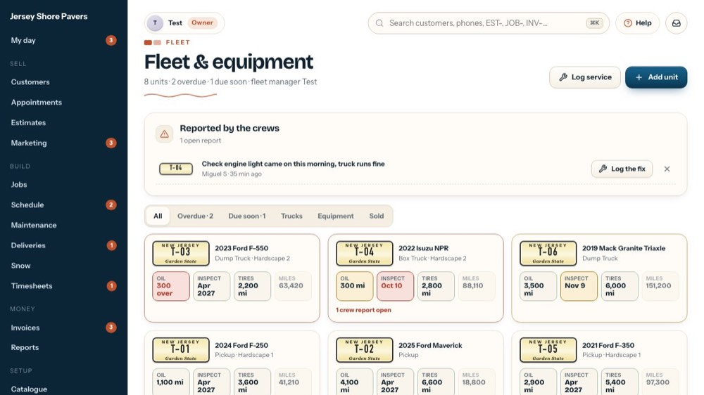
1Fleet & equipment
Every truck and machine: how many, how many are overdue or due soon, and the fleet manager, who gets the Monday due list and the crews' truck reports (set in Settings).
-
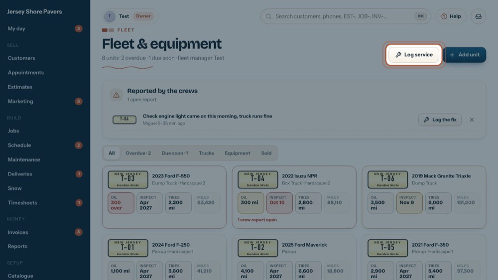
2Log service
Records an oil change, inspection, tire service or repair for any unit. The tour "Log a service, oil change or repair" shows the form.
-
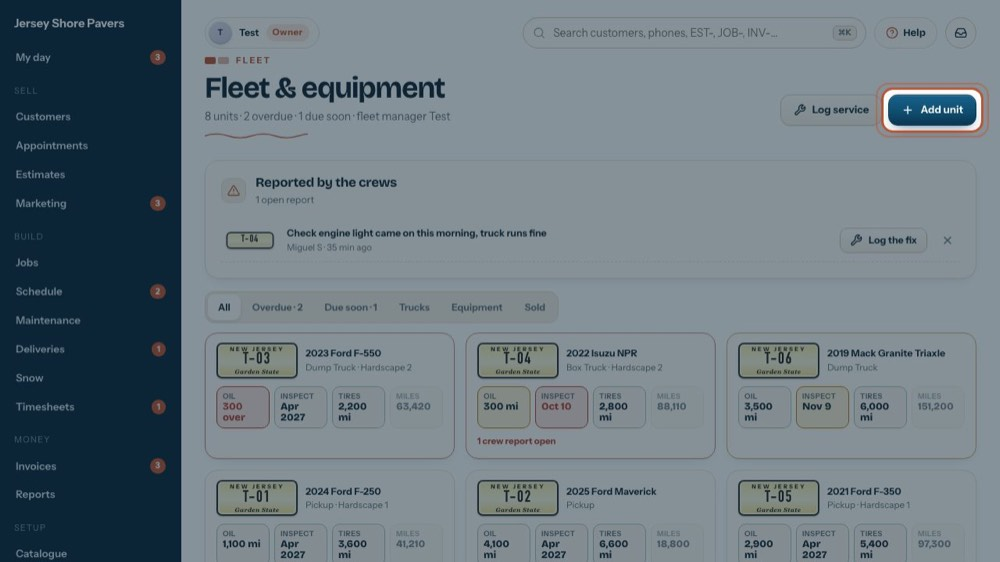
3Add unit
Adds a truck or machine with its service intervals. The tour "Add or change a truck or machine" shows the form.
-
 4
4Reported by the crews
Problems crew leads report from the phone (the truck form under More), with photos. The fleet manager hears about them right away.
-
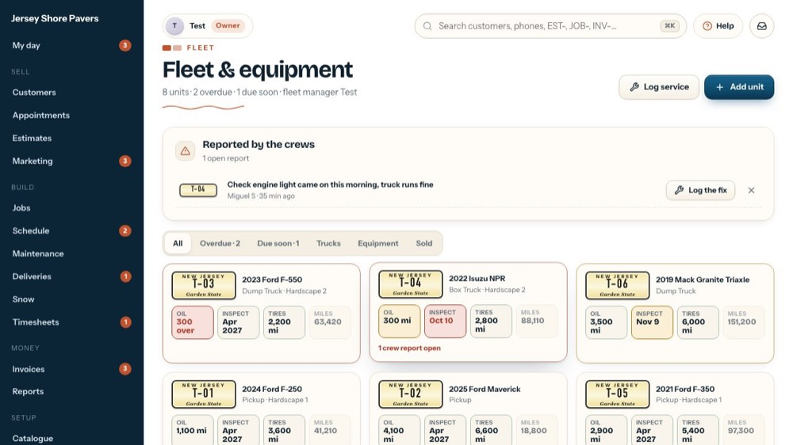
5Log the fix
Opens Log service for that unit with the problem filled in. Logging the fix closes the report.
-
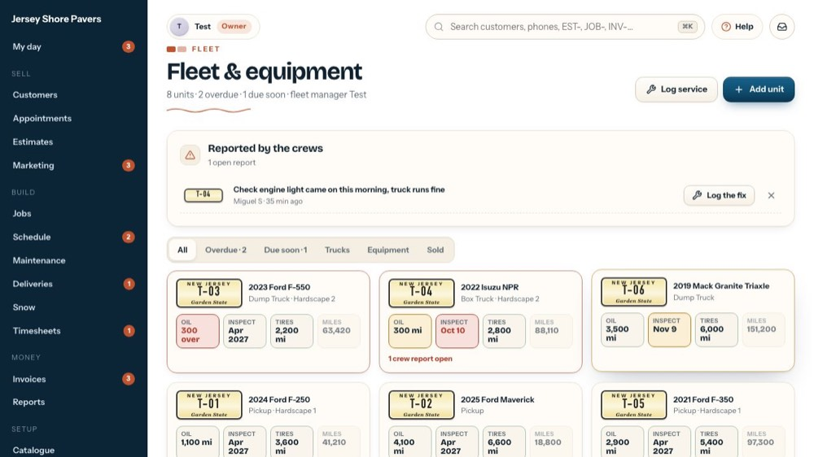
6Close without a fix
The x closes a report that needs no repair. Nothing is logged.
-
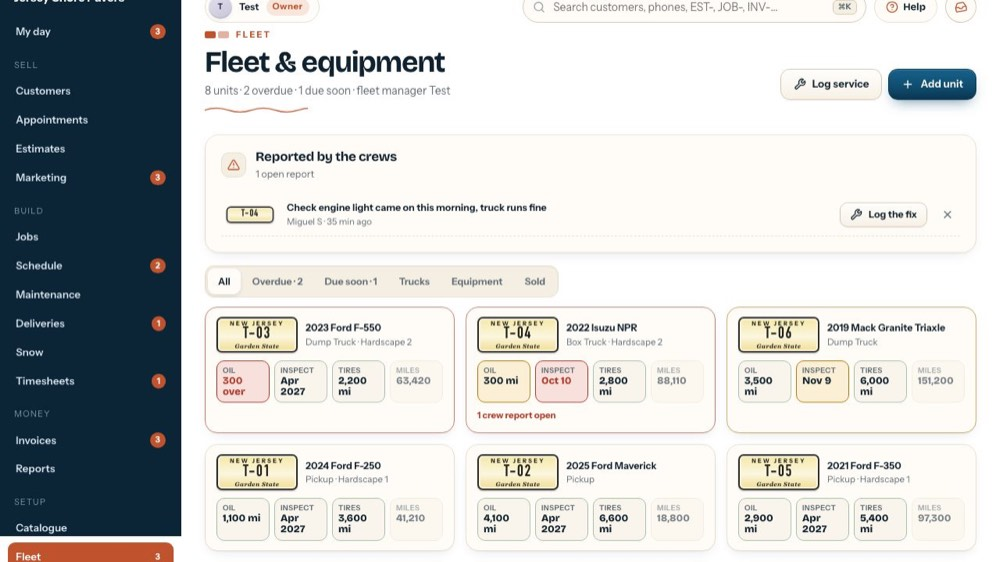
7Filter the units
All (everything not sold), Overdue, Due soon, Trucks, Equipment and Sold. The numbers say how many are overdue and due soon.
-
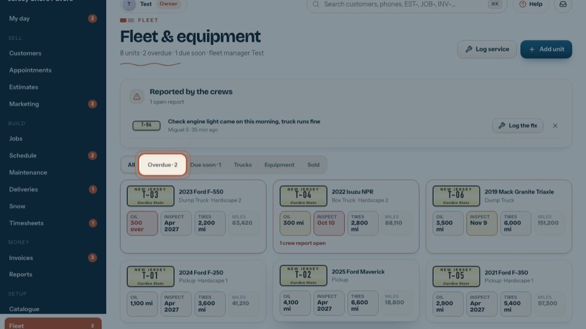
8Overdue
Only the units with something past due.
-
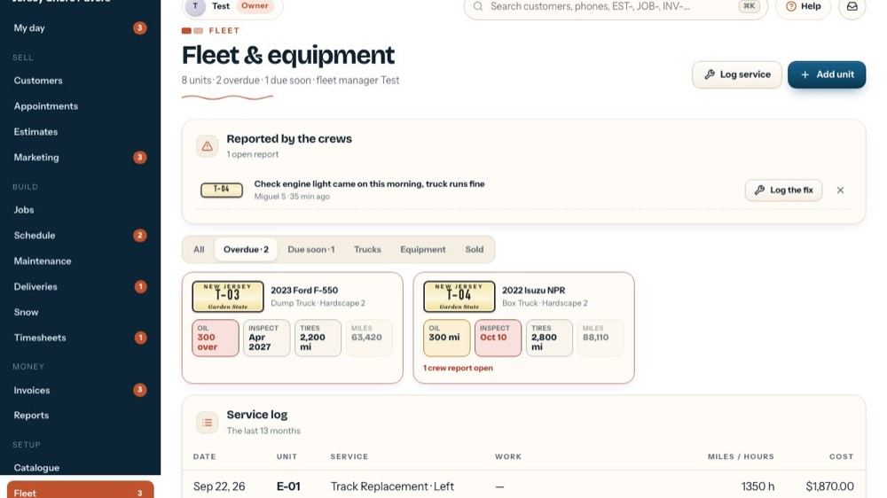
9All
Back to every unit. Sold ones stay under Sold.
-
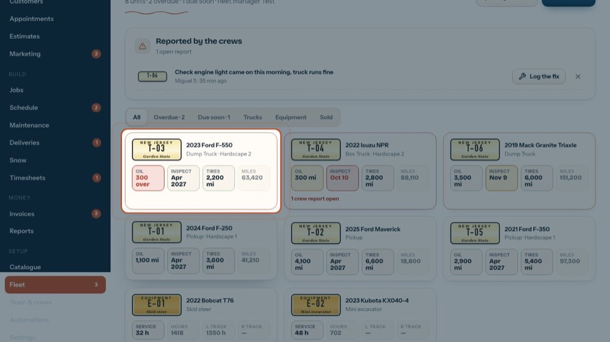
10A truck
Oil and Tires: miles left (red = over). Inspect: the next inspection. Miles: the last odometer. A red card has something overdue, an amber one something due soon.
-
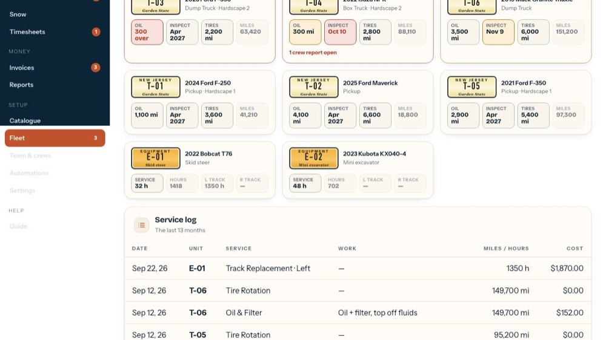
11A machine
Machines count engine hours. Service: hours left to the next service. Hours: the meter. L and R track: the hours on each track.
-
12
Open a unit
Click a unit to open it.
-
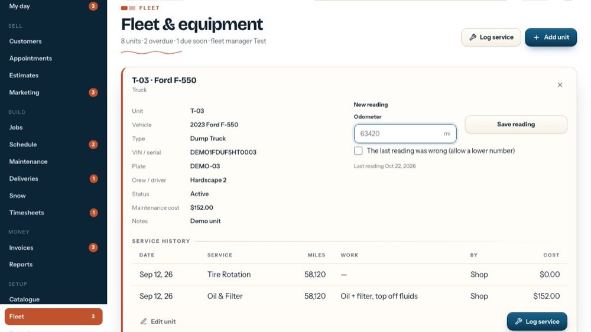
13Its details
Vehicle, type, VIN or serial, plate, crew or driver, status, what its maintenance has cost and notes.
-
 14
14New reading
Type today's odometer (engine hours for a machine) so the due dates stay right. The date of the last reading is below.
-
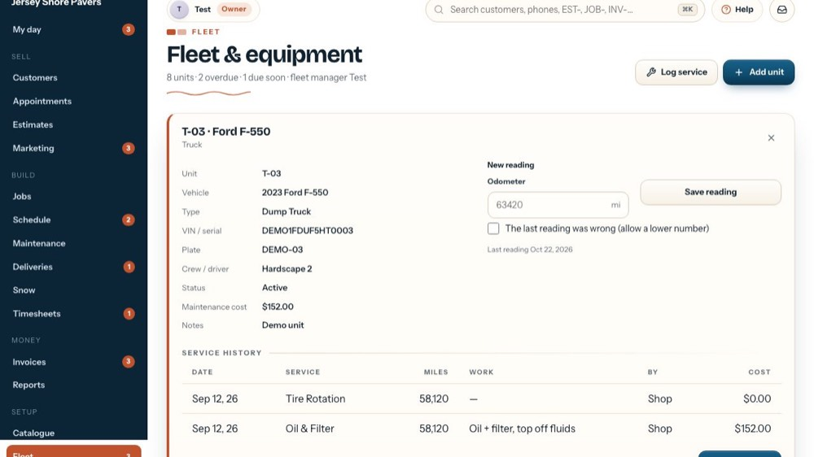
15Fix a wrong reading
Tick it only to correct a typo: it allows a number lower than the last reading.
-
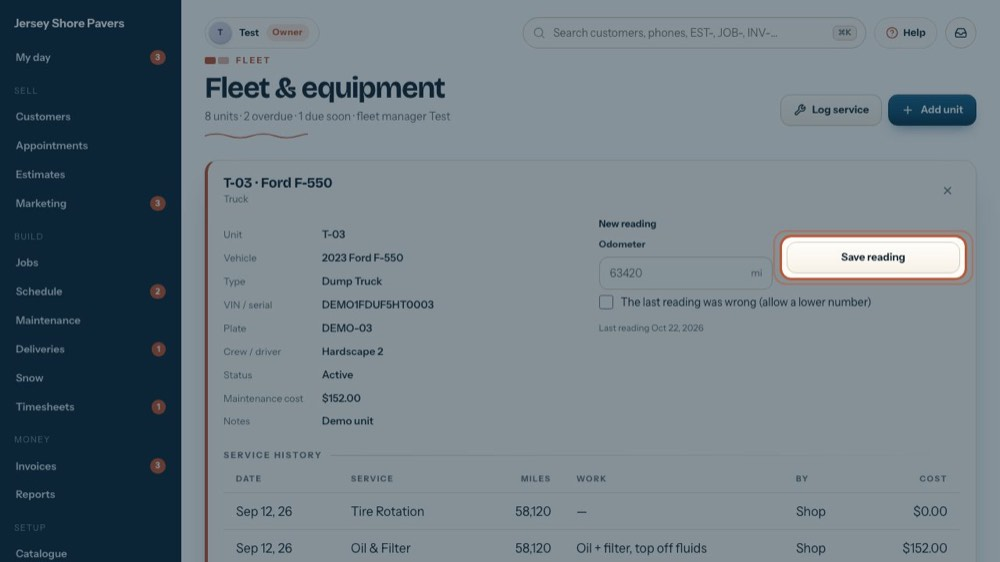
16Save reading
Saves the number and works out again what is due.
-
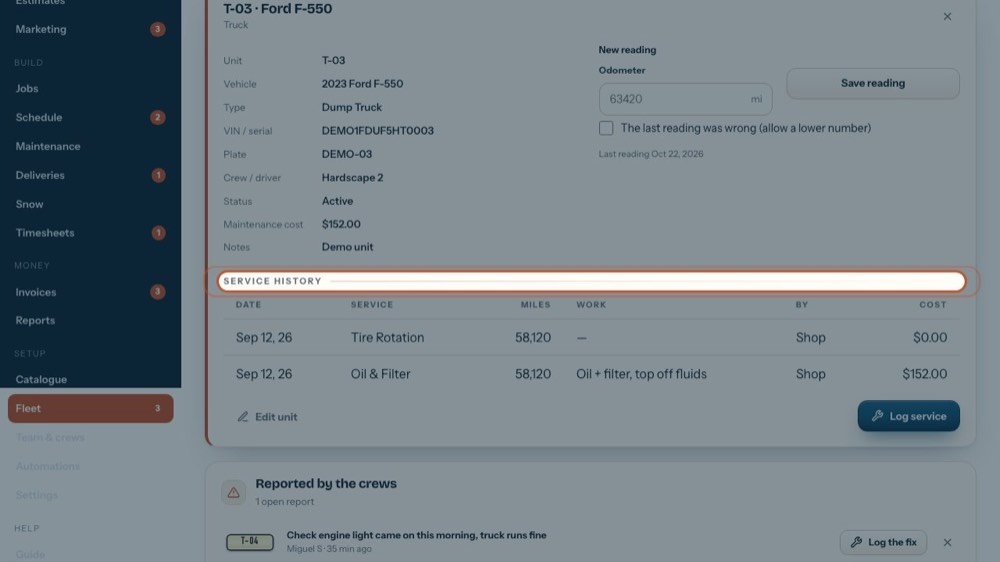
17Service history
Every service on this unit: date, service, miles or hours, the work, who did it and the cost.
-
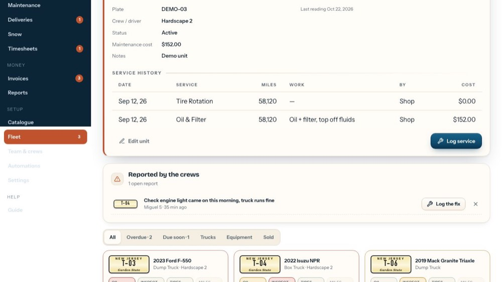
18Edit unit
Changes its details and intervals, or marks it Sold.
-
 19
19Log service for this unit
Opens the service form with this unit and its last reading filled in.
-
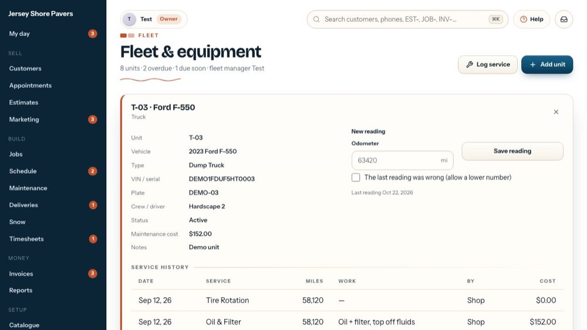
20Close it
The tour closes it.
-
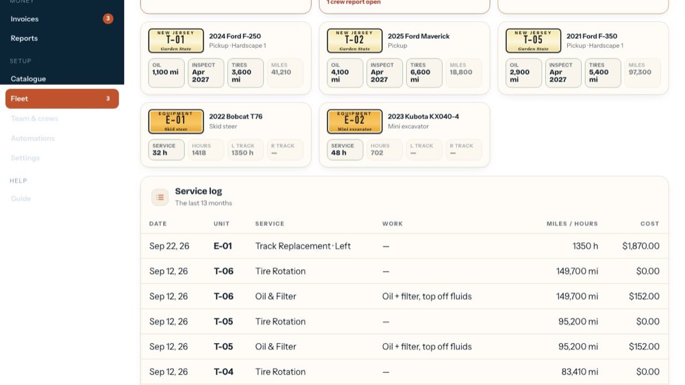
21Service log
Everything serviced in the last 13 months, newest first: date, unit, service, work, miles or hours and cost. 20 rows a page.